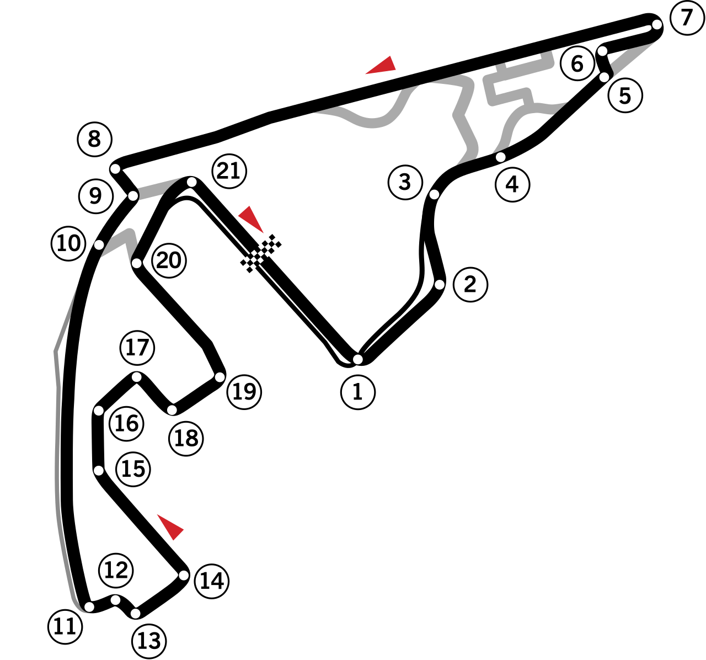

| Circuit | Tracé | Resumé dernier GP |
|---|---|---|
|
1. Grand Prix de Monaco Le circuit de F1 le plus légendaire du calendrier ne brille pas que par sa notoriété, il est aussi le meilleur GP pour faire la sieste sans se soucier du résultat. La raison ? Il est casiment impossible de doubler. |
||
|
2. Grand Prix de Singapour Le circuit urbain est magnifique, mais les courses sont longues (près de 2 heures) et très processionales. Peu de dépassements, rythme lent. Très dur physiquement pour les pilotes, mais pas passionnant pour le public. |
||
|
3. Grand Prix d'Abou Dabi Malgré le glamour et le cadre incroyable, la course est souvent stratégiquement figée. Avant la refonte du tracé en 2021, les dépassements étaient rares. En dehors de 2021, peu d'émotions en fin de saison. |
 | |
|
4. Grand Prix d'Espagne Tracé très utilisé pour les essais hivernaux, les équipes le connaissent par cœur. Peu de dépassements, sauf après modifications récentes du dernier secteur. Courses souvent stratégiques, rarement intenses. |
||
|
5. Grand Prix de Hongrie Circuit très sinueux, quasi impossible de doubler. Courses souvent décidées par la stratégie plutôt que par l'action. Quand il pleut, c'est génial, sinon c'est full train DRS. |